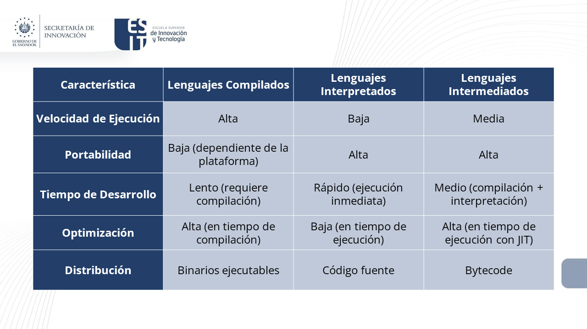

1. Conceptos Fundamentales de Programación
5. Lenguajes de Programación
Los lenguajes de programación se pueden clasificar en compilados, interpretados e intermediados, según la manera en que se traduce y ejecuta el código fuente. A continuación, se describe cada uno de estos tipos, junto con ejemplos y características.
Lenguajes Compilados
Un lenguaje compilado es aquel en el que el código fuente se traduce directamente a código máquina mediante un compilador. Este código máquina es específico para la arquitectura del sistema y se ejecuta directamente por la CPU.
Características
- Rendimiento: Generalmente, los programas compilados se ejecutan más rápidamente que los interpretados, porque ya están traducidos a código máquina.
- Detección de Errores: Los errores de sintaxis y algunos errores semánticos se detectan en tiempo de compilación.
- Distribución: Se distribuye el ejecutable compilado, no el código fuente, lo que puede proteger la propiedad intelectual.
Ejemplos
- C: Uno de los lenguajes compilados más conocidos y utilizados.
- C++: Extensión orientada a objetos de C.
- Go: Lenguaje de programación desarrollado por Google.
- Rust: Lenguaje de programación enfocado en la seguridad y el rendimiento.
Lenguajes Interpretados
Un lenguaje interpretado es aquel en el que el código fuente se ejecuta directamente mediante un intérprete, que lee y ejecuta el código línea por línea.
Características
- Portabilidad: El mismo código fuente puede ejecutarse en diferentes plataformas sin necesidad de recompilación, siempre que exista un intérprete adecuado.
- Desarrollo Rápido: Facilita un ciclo de desarrollo rápido debido a la ejecución inmediata y la facilidad para probar y depurar.
- Rendimiento: Generalmente, los programas interpretados son más lentos que los compilados, porque el código fuente se analiza y ejecuta en tiempo real.
Ejemplos
- Python: Popular por su simplicidad y legibilidad.
- JavaScript: Lenguaje de scripting utilizado principalmente en el desarrollo web.
- Ruby: Conocido por su simplicidad y el framework Ruby on Rails.
- PHP: Usado principalmente para desarrollo web del lado del servidor.
Lenguajes Intermediados
Un lenguaje intermediado se compila primero a un código intermedio (bytecode), que luego es interpretado o compilado en tiempo de ejecución (compilación Justo a Tiempo, JIT).
Características
- Portabilidad: El bytecode es independiente de la plataforma, lo que permite la ejecución en cualquier sistema que tenga una máquina virtual (VM) adecuada.
- Optimización en Tiempo de Ejecución: Las VMs pueden aplicar optimizaciones adicionales durante la ejecución, mejorando el rendimiento.
- Seguridad: Las VMs pueden proporcionar un entorno controlado para la ejecución del bytecode, mejorando la seguridad y la gestión de recursos.
Ejemplos
- Java: Compila a bytecode que se ejecuta en la Java Virtual Machine (JVM).
- C#: Compila a Common Intermediate Language (CIL), ejecutado por la Common Language Runtime (CLR) en .NET.
- Python (con PyPy): Aunque Python es tradicionalmente interpretado, PyPy compila a un bytecode intermedio que es ejecutado más eficientemente.
- Perl: Usa un compilador para convertir el código fuente en bytecode antes de su ejecución.
Comparación

Obra publicada con Licencia Creative Commons Reconocimiento Compartir igual 4.0